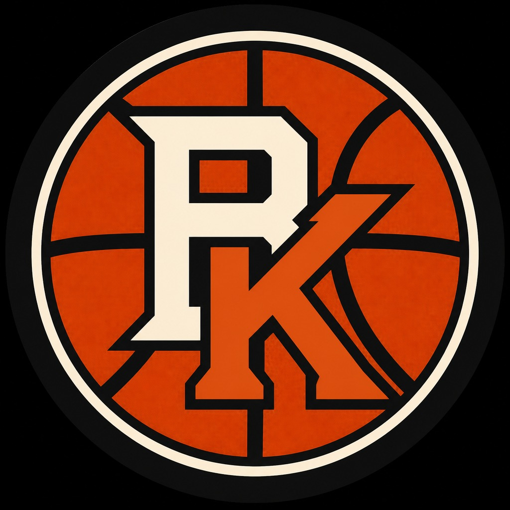

BASKETBALLKEEP
Dynasty · Redraft · Hardwood
BK News · Injury
Oct 25, 2026 · 20:59 UTC · 1 source
Aggregate
Coby White Injury: Sidelined once again RotoWire Board reading of RotoWire.
Players on this story
SG CHI
Tape
Coby White Injury: Sidelined once again RotoWire
Related
New Player Emerging as Candidate For Cleveland Cavaliers to Trade Evan Mobley For Sports Illustrated
Jalen Williams had to be stretchered off after sustaining an apparent leg injury Hope he's okay 🙏
Suggs' knee buckled as he went up for a layup against the Knicks on Sunday
Magic guard Jalen Suggs had to be helped off the floor late in the fourth quarter Sunday against the Knicks…
Isaiah Joe Injury: Won't return Sunday RotoWire
All BK News · Player pages · The Keep